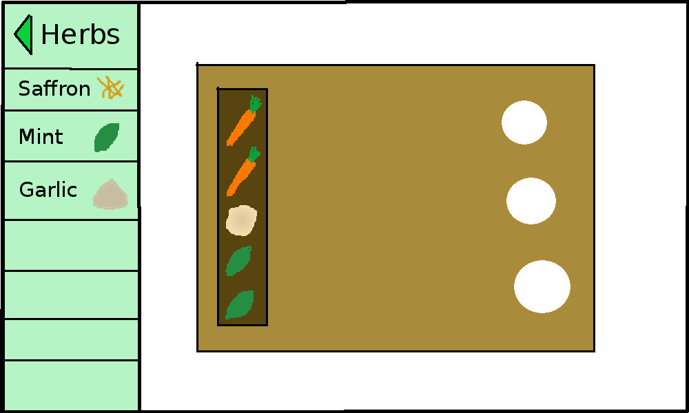

Plan your garden
You've put the following plants in your garden plan:

Carrot:
The carrot is a root vegetable, usually orange in colour, though purple, red, white, and yellow varieties exist. It has a crisp texture when fresh. Carrots are widely used in many cuisines, especially in the preparation of salads, and carrot salads are a tradition in many regional cuisines.
Carrots grow best in full sun but tolerate some shade. The optimum growth temperature is between 16 and 21 degrees C (61 and 70 degrees F). In order to avoid growing deformed carrots it is better to plant them in loose soil free from rocks. Carrots take around four months to mature and it is suggested that carrot seeds are sown from mid-February to July, about 2cm deep.
Mint:
Spearmint is a species of mint native to much of Europe and southwest Asia.
Spearmint grows well in nearly all temperate climates. Gardeners often grow it in pots or planters due to its invasive, spreading rhizomes. The plant prefers partial shade, but can flourish in full sun to mostly shade. Spearmint is best suited to loamy soils with abundant organic material.
Potato:
The potato is a starchy, tuberous crop. It is the world's fourth-largest food crop, following maize, wheat and rice.
Potatoes are generally grown from seed potatoes - these are tubers specifically grown to be disease free and provide consistent and healthy plants. Tuber formation halts when soil temperatures reach 27 degrees C (81 degrees F); hence potatoes are considered a cool-season crop. Potatoes are sensitive to heavy frosts, which damage them in the ground. Even cold weather makes potatoes more susceptible to bruising and possibly later rotting, which can quickly ruin a large stored crop.